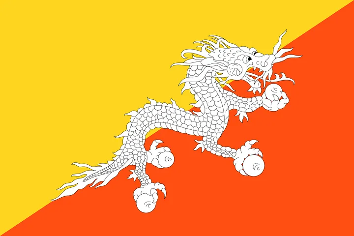
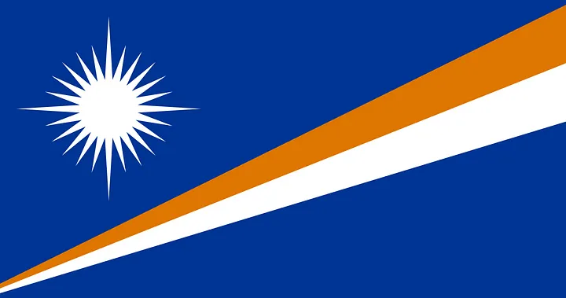

Countries of the World
Barbados

If Atlantis were real (read: and not currently underneath the Atlantic), you know this would be its flag. It’s simple, it’s elegant, it’s got a freaking trident on it. Poseidon himself certainly would’ve flown this bad boy.
Quick Info:
- Population: about 290,000 people live in Barbados (2023)
- Capital: Bridgetown with 100,000 inhabitants
- Government: republic with parliamentary democracy
- Language: English
- Literacy: 99% of all the Barbadians over the age of 15 years can read and write
- Religion: Christians (73%, with the vast majority being Protestants)
- Currency: 1 Barbados dollar = 100 cents
- National colors: blue, yellow, black
- National symbols: Neptune’s trident (shown also on the flag), pelican, Pride of Barbados (Red Bird of Paradise flower)
Go back to menu
Bhutan

One of only two national flags with a dragon on it, I gotta give the “coolest” award to the flag of Bhutan. The Welsh flag is pretty sweet as well, but Bhutan’s has got the Thunder Dragon on there. Like Buddhist monks back in the 12th century, I understand that you don’t fuck with something that has “Thunder” included in its name. So I’m not about to start doing that now.
Quick Info:
- Population: 876,000 inhabitants (2023). The majority of the people live in the capital city.
- Capital: Thimphu with 203,000 inhabitants
- Name: 'Kingdom of Bhutan'. The Bhutanese name is Druk Gyal Khap, which means the 'Land of the Thunder Dragon'
- Government: Parliamentary monarchy
- Language: Dzongkha (Bhutanese)
- Literacy: 71% of all Bhutanese aged 15 and older can read and write
- Religion: Buddhism (75%), Hinduism (22%)
- Currency: 1 ngultrum equals 100 chhertum
- National day: 17 December
- National symbols: the takin (national animal) and the blue poppy (national flower), the raven (national bird)
Go back to menu
Marshall Islands

One of only two national flags with a dragon on it, I gotta give the “coolest” award to the flag of Bhutan. The Welsh flag is pretty sweet as well, but Bhutan’s has got the Thunder Dragon on there. Like Buddhist monks back in the 12th century, I understand that you don’t fuck with something that has “Thunder” included in its name. So I’m not about to start doing that now.
Quick Info:
- Population: 72,191 inhabitants (2015 est.).
- Capital: Majuro with 31,000 inhabitants (2014)
- Government: Parliamentary democracy in free association with the US
- Language: Ebon (Marshallese)
- Literacy: 98% of all Bhutanese aged 15 and older can read and write
- Religion: Christianity (96%), Protestantism (80%), Catholicism (9%)
- Currency: U.S. dollar
- National colors: blue, orange, white
- National day: 1 May (Jemenei Day)
- National symbols: Eastern Spinner Dolphin (national animal) and the Plumeria (national flower), Common Brown Noddy (national bird)
Go back to menu